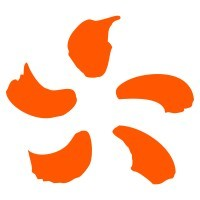

Aug 2026 – Presentcurrent
Asset Manager, EV Charging network & BESS
EDF Business Services · Luminus Izivia EV Charging Solutions · Brussels
- Asset management of energy infrastructure in a greenfield department, which required building and implementing several asset monitoring and reporting tools.
- Owner of the business plan and of the dimensioning of future sites across the country. Implemented AI-backed Monte-Carlo BESS dimensioning tool increasing project IRR up to 2.4 pts.
- Coordination of 15+ site deployments in parallel: project management, from permit, grid operators, landlords, contractors, internal political challenges of large corporation and subcontractors.